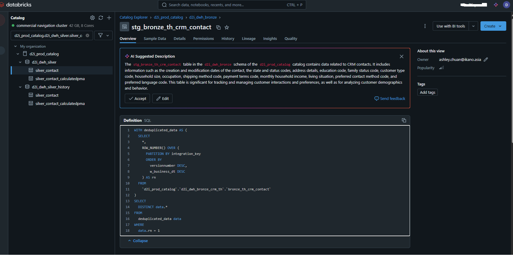

Beginner’s Guide to Window Functions in SQL
What if you could perform calculations on rows of data but still see every row? Meet Window Functions!
Imagine you're running a marathon, and you’re curious not just about who won, but also how you rank within your age group, your city, or among your friends. Window Functions are like the "rank tracker" for your SQL data—helping you zoom in on specific slices of your data while keeping the big picture in view.
Think of it this way: Aggregate functions (like SUM, AVG) summarize data by squashing rows together. Window Functions, on the other hand, let you see both the summary and the individual details. It’s like having your cake and eating it too!
What Are Window Functions?
The Cheat Code for Advanced Data Analysis
Window Functions are SQL’s way of saying, “Hey, let’s analyze data row-by-row, but also calculate cool stuff based on groups or sequences.” The magic happens in the OVER clause—that’s where you define the "window" of rows you’re analyzing.
Here’s the anatomy of a Window Function:
function_name(column_name) OVER (PARTITION BY column_name ORDER BY column_name)
- Function Name: This is the action (e.g., SUM, AVG, ROW_NUMBER).
- OVER Clause: The heart of the operation—it tells SQL how to group and order the data.
- PARTITION BY: Defines groups (e.g., all employees in the same department).
- ORDER BY: Specifies the sequence within each group.
Meet the Cast: Types of Window Functions
Let’s dive into the superstar Window Functions—each has its own talent for tackling data challenges.
1. Aggregate Functions with OVER Clause
"Summing Things Up Without Losing the Details"
Use these to calculate totals, averages, and more within defined windows. Perfect for seeing the forest and the trees.
- Scenario: You’re managing a team and want to know each person’s salary along with the total salary of their department.
sql SELECT department, employee_name, salary, SUM(salary) OVER (PARTITION BY department) AS total_salary FROM employees;Output: | Department | Employee Name | Salary | Total Salary | |------------|---------------|--------|--------------| | Sales | Alice | 5000 | 15000 | | Sales | Bob | 7000 | 15000 | | Sales | Charlie | 3000 | 15000 |
2. Ranking Functions
"Who’s on Top?"
When you need to assign ranks or positions to rows, these functions are your go-to tools.
ROW_NUMBER(): The Uniquely Numbered MVP
-
Scenario: Rank employees by salary within each department.
sql SELECT department, employee_name, salary, ROW_NUMBER() OVER (PARTITION BY department ORDER BY salary DESC) AS rank FROM employees; -
PROD Scenario: Here is a real-query used in a prod envirnment:

This query uses the ROW_NUMBER() window function to deduplicate data based on the integration_key column. Here’s how it works step by step:
##### Breakdown of ROW_NUMBER and RANKING Logic:
-
Purpose of
ROW_NUMBER():- It assigns a unique row number to each record within a partition defined by the
PARTITION BYclause. - The numbering starts at 1 for each partition, based on the ordering specified in the
ORDER BYclause.
- It assigns a unique row number to each record within a partition defined by the
-
PARTITION BY integration_key:- Divides the data into partitions, where each partition corresponds to a unique
integration_key.
- Divides the data into partitions, where each partition corresponds to a unique
-
ORDER BY versionnumber DESC, w_business_dt DESC:- Within each partition, the rows are sorted by:
versionnumberin descending order (higher version numbers appear first).- If there are ties in
versionnumber, they are further sorted byw_business_dtin descending order (more recent dates appear first).
-
Alias
rn:- The
ROW_NUMBER()function assigns a row number to each row in the partition. The row with the highest priority (based on theORDER BYconditions) getsrn = 1.
- The
##### Final Selection:
WHERE data.rn = 1:-
This filters out all rows except the one with
rn = 1, effectively keeping only the "best" row (highest versionnumber and latest date) for eachintegration_key. -
SELECT DISTINCT data.*: - Ensures that there are no duplicate rows in the output.
##### What Happens in the Query:
-
Deduplication:
- The CTE (
WITH deduplicated_data) ensures eachintegration_keyhas exactly one row based on the ranking logic.
- The CTE (
-
Extraction:
- The main query fetches only the top-ranked rows (
rn = 1) for eachintegration_key.
- The main query fetches only the top-ranked rows (
This approach is commonly used in SQL to handle deduplication when there’s a clear ranking or prioritization logic. Let me know if you need additional examples or variations!
RANK(): Sharing the Spotlight
- Assigns the same rank to rows with identical values, but skips the next rank.
- Scenario: Similar to
ROW_NUMBER()but with ties.
DENSE_RANK(): Closing the Gaps
- No gaps in ranks, even with ties.
NTILE(n): Divide and Conquer
- Divides rows into
nequal parts—great for quartiles or deciles.
3. Distribution Functions
"How Do You Stack Up?"
Use these to see how a value compares to others within a window.
CUME_DIST(): Track Your Progress
- Scenario: See the cumulative distribution of salaries.
sql SELECT employee_name, salary, CUME_DIST() OVER (ORDER BY salary ASC) AS cumulative_distribution FROM employees;
PERCENT_RANK(): Relative Ranking Made Easy
- Similar to
CUME_DIST(), but calculates the rank percentage.
Playtime: Real-Life Scenarios
1. Pagination: Scrolling Through Results Like a Pro
When you need to split results into pages, ROW_NUMBER() is your best friend.
SELECT *
FROM (
SELECT employee_name, ROW_NUMBER() OVER (ORDER BY employee_id) AS row_num
FROM employees
) subquery
WHERE row_num BETWEEN 11 AND 20;
2. Running Totals: Tracking Progress Step by Step
Great for financial or time-series data.
SELECT order_id, amount,
SUM(amount) OVER (ORDER BY order_date) AS running_total
FROM orders;
Cheat Sheet: Quick Reference Table
| Function | Superpower | Handles Ties | Gaps in Rank |
|---|---|---|---|
| ROW_NUMBER() | Unique numbering of rows | No | N/A |
| RANK() | Rank with ties, skips next | Yes | Yes |
| DENSE_RANK() | Rank with ties, no gaps | Yes | No |
| NTILE(n) | Split rows into n groups |
N/A | N/A |
Your Turn: Practice Makes Perfect
Here’s a fun challenge to flex your SQL muscles. Given this table:
| Region | Salesperson | Sales |
|---|---|---|
| East | John | 5000 |
| East | Jane | 7000 |
| West | Jack | 8000 |
| West | Jill | 3000 |
Challenge:
- Rank salespeople by their sales within each region.
- Calculate the cumulative sales for each region.